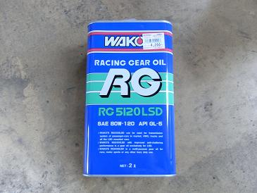
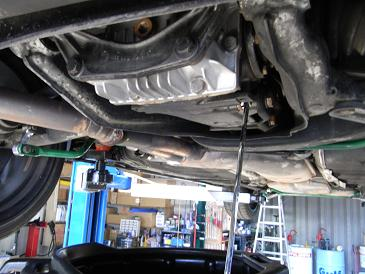
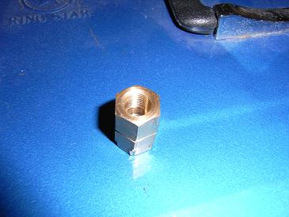

2010/7/27 デフオイルの交換
 今回入れたオイルは、某自動車部品量販店で一番安かったコレをチョイスした。 WAKOS RG5120 80W-120だ。 |
  まずフィラープラグを緩めてから、ドレンプラグを緩めてオイルを排出する。 次にフィラーから大きい注射器のようなポンプで新油を入れる。フィラーから新油が溢れてきたところが既定量。 ミディアムサイズのデフで約1.5L入る。 このドレンプラグ、10mmの六角レンチで緩めれると思っていたのだが、実際は14mmでフィラー側が普通の六角レンチではスペース不足で入らず、工具を探すのに苦労した。 そこで、見つけたのが写真右の物なのだが、、工具ではないのでやはり強度が。。 次に交換するまでに14mmの六角レンチを切断してSSTを作ろうと思う。 |